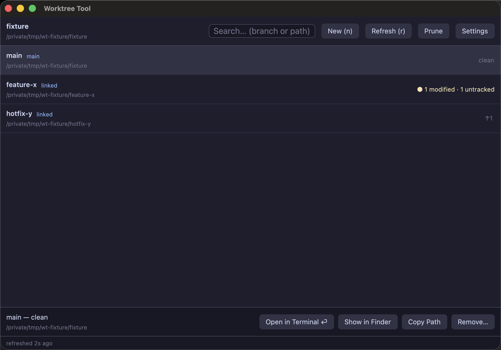

worktree-tool
A fast, keyboard-first, GPU-rendered GUI for managing git worktrees. Built in Rust with GPUI. Native on macOS, Linux, Windows, and FreeBSD.
Download for macOS View source

What is it for?
Git worktrees let you check out multiple branches of the same
repository at the same time, each in its own directory — no
stashing, no re-cloning, no git checkout roulette while
you're mid-change. They're one of git's best features and one of its
most awkward: everything happens through git worktree add/list/
remove, there's no overview of what exists, and a dirty worktree
refuses to be removed with a wall of stderr.
worktree-tool turns that into a single window: every worktree of your repository with its branch, uncommitted changes, and ahead/behind position; create, remove, and prune without memorizing flags; and one keypress to open any of them in your terminal.
How it works
The app is a thin, fast layer over git itself — it never rewrites your repository through a library:
- Listing & status come from
git worktree list --porcelainandgit status --porcelain=v2, run concurrently across your worktrees on background threads (a 50-worktree refresh takes ~140 ms). - Everything runs off the UI thread — git calls are
blocking
std::processinvocations on GPUI's background executor, so the window never stutters. - Mutations (
add,remove,prune) are the same commands you'd type, with--separators so nothing you type can be mistaken for a git flag. - Rendering is GPU-accelerated via GPUI (Zed's framework): Metal on macOS, Vulkan on Linux, Direct3D on Windows.
Features
Live status badges
Per worktree: staged / modified / untracked counts and ↑ahead / ↓behind vs upstream. Dirty worktrees are flagged in amber.
Safe removal
Removal warns about uncommitted changes and lets git refuse — force is an explicit, separate opt-in.
Search as you type
Case-insensitive filter over branch names and paths, driven straight from the keyboard.
Your terminal, your choice
Opens worktrees in your terminal — auto-detected, or pinned in settings. 26 terminals across 4 platforms.
Keyboard-first
n, /, r, arrows, enter, backspace — the whole workflow works without touching the mouse.
Native & tiny
~6 MB universal macOS binary, ~110 ms cold start, ~63 MB RSS. No Electron, no webview.
Tutorials
Install
macOS: download
worktree-tool-<version>-macos-universal.zip from the
releases page,
unzip, and drag Worktree Tool.app to /Applications.
The build is ad-hoc signed, so on first launch right-click → Open
to get past Gatekeeper.
Any platform, from source:
git clone https://github.com/gregnazario/worktree-ui
cd worktree-ui
cargo build --release # first build takes a few minutes
# binary: target/release/worktree-toolYour first five minutes
Open a repository. Run the binary from inside a git repository — it detects the repo from the working directory. Launched from Finder/Dock you'll get a path picker instead; type or paste the repository path and press Load.
Read the room. The main worktree is tagged
main; linked worktrees are
linked. Amber badges mean
uncommitted work; ↑2 means 2 commits ahead of upstream.
Create a worktree. Press n. Give the
branch a name — the destination path fills in automatically as
<repo>-worktrees/<branch> next to your repo
(edit it if you like), pick a base branch, and hit Create.
Your existing checkout is untouched.
Jump into it. Select the row and press enter — a terminal opens with that worktree as its working directory. Copy Path and Show in Finder are one click away in the detail pane.
Clean up. Merged the branch? Select the worktree and press backspace. If it has uncommitted changes the dialog tells you and refuses unless you explicitly check Force. Deleted a worktree folder behind git's back? Prune clears the stale entry.
Pick your terminal
Press the Settings button in the toolbar. It lists every terminal installed on your machine — click one to pin it. Preferences are stored at an XDG path on every platform:
$XDG_CONFIG_HOME/worktree-tool/settings.toml # default: ~/.config/worktree-tool/settings.toml
# terminal: one of terminal, iterm, wezterm, ghostty, alacritty, kitty, warp, hyper
terminal = "iterm"settings.toml → the
$TERMCMD environment variable (Zed's convention) → first
auto-detected terminal. Unset the preference to go back to automatic.Example workflows
| Workflow | How |
|---|---|
| Hotfix mid-feature | Press n, base main, branch hotfix/crash, create. You get a second checkout instantly; your feature worktree keeps its uncommitted state. Ship the fix, backspace the worktree, done. |
| Run tests on main while editing a branch | Keep main in one worktree and your branch in another; enter opens each in its own terminal so long test runs and editing never fight over one checkout. |
| Review someone's PR locally | Create a worktree for their-branch (existing-branch mode), build and run it there, remove afterwards — your checkout never moves. |
| Audit parallel experiments | Type / then a branch fragment to slice the list; the status badges show at a glance which experiments have uncommitted or unpushed work worth rescuing before you prune. |
Keyboard shortcuts
| Key | Action |
|---|---|
| n / ⌘n | New worktree |
| / / ⌘f | Focus search |
| esc | Clear search / close dialog |
| r / ⌘r | Refresh statuses |
| ↑ ↓ | Move selection |
| enter | Open selection in terminal |
| backspace / delete | Remove selected worktree |
| ⌘q | Quit |
In text fields: enter confirms a dialog, esc cancels, ←→homeend move the caret. IME/marked-text input is not supported yet.
Terminal support
| Platform | Terminals, in auto-detect preference order |
|---|---|
| macOS | Terminal, iTerm2, WezTerm, Ghostty, Alacritty, Kitty, Warp, Hyper |
| Linux / BSD | xdg-terminal-exec, GNOME Terminal, Konsole, Xfce Terminal, foot, Tilix, Kitty, Ghostty, Alacritty, WezTerm, xterm |
| Windows | Windows Terminal, PowerShell 7, Windows PowerShell, Command Prompt, Alacritty, WezTerm, Ghostty |
CLI terminals launch with the
worktree as their working directory; macOS bundles launch via
open -a; Windows Terminal gets an explicit
-d flag. "Show in Finder / Files / File Explorer" reveals
the worktree selected in its parent folder.
Development
cargo build # first build compiles GPUI's shader stack
cargo test # 28 tests: parsers, git integration, headless GPUI UI tests
cargo clippy --all-targets -- -D warnings
cargo run --release --example bench # performance harness
scripts/package-macos.sh 0.1.0 # universal .app bundle + zipCI runs the full test suite on macOS, Linux, Windows, and a FreeBSD VM
on every push; tagging a release v* builds and publishes
the macOS package. The project is Apache-2.0.